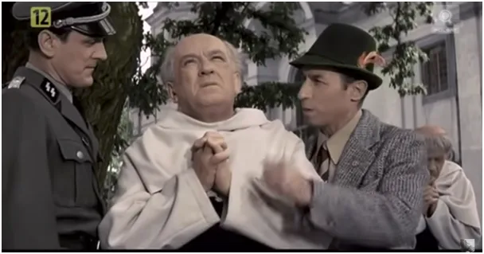
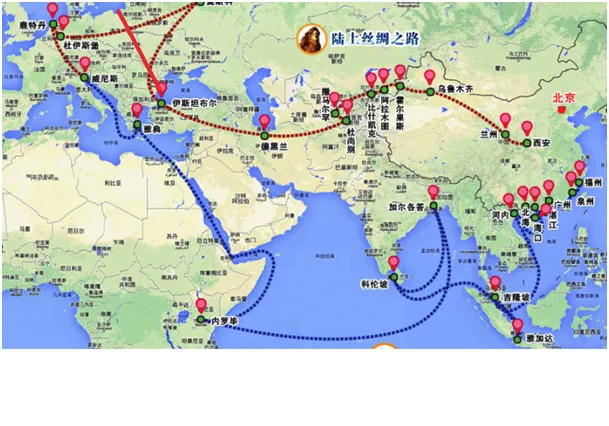
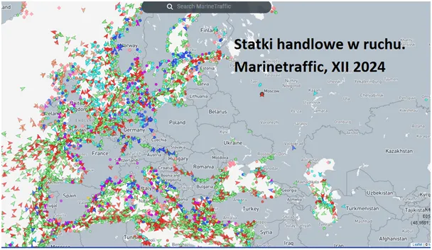
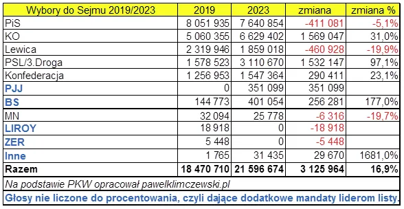
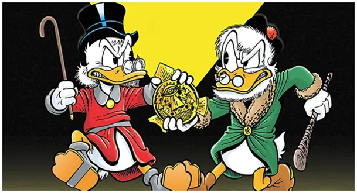

Szopka polska 6.0. Odcinek 1547. Doktor Jekyll i pan Hyde wzajemnie się nienawidzą.
Boże Narodzenie to czas wzajemnych wybaczeń i odrodzenia się w nas czystego człowieczeństwa. Piękne polskie zwyczaje kultywujemy od setek lat i od setek lat jak dzieci jesteśmy rozgrywani przez zamorskie mocarstwa. W pierwszy dzień świąt stacja "katolickiej" partii pokazuje budzący grozę fotomontaż uzbrojonych policjantów w zakonie, co to szukają ściganego polityka PiS-u z zarzutami. Obrazek zmontowany po mistrzowsku, SS-mani na terenie polskiego klasztoru to klasyka naszego kina i zarazem kalka głęboko odciśnięta w masowej wyobraźni.

Polska leży w jednym z najważniejszych miejsc na świecie, nie bez powodu na chińskich mapach przez Polskę przebiega główny szlak handlowy z Azji do Europy. Dorysowałem na tej mapie jeszcze czerwony szlak łączący Odessę z Elblągiem. To najkrótsza droga z Oceanu Indyjskiego przez Morze Czarne do północnej, bogatej Europy. Nie bez powodu na tym szlaku w XIII wieku niemieccy rycerze z Zakonu Najświętszej Marii Panny w Malborku postawili zamek.

W szczycie swej potęgi w XVII wieku Polska kontrolowała wszystkie szlaki lądowe między Azją a Europą. Nie jest prawdą, że po odkryciu Ameryki znaczenie tych połączeń stało się marginalne. Wraz z rozwojem przemysłu i transportu obszar trójmorza (Adriatyk, Bałtyk, Morze Czarne) jest fenomenalnym, ale martwym węzłem komunikacyjnym. Rządzącym światem w XX wieku udało się całkowicie wyeliminować żeglugę handlową z tej części świata, w tym z Wisły. Drogi wodne są najtańszym sposobem transportu i cała Europa Zachodnia oraz Rosja są gęste od torów wodnych.

Problem ten i wiele podobnych, nigdy nie był podnoszony przez żadne ugrupowanie polityczne w PRL bis. W praktyce jest znacznie gorzej: jeszcze przed wojną na Ukrainie, aby wysłać kontener z Rzeszowa do Istambułu musi on być przeładowany w niemieckich portach i przez Gibraltar płynąć wokół całej Europy, zamiast pokonać kilkaset kilometrów przez Odessę i Morze Czarne. To są nasze prawdziwe problemy a nie ściganie po klasztorach jakiś złodziejaszków.

Czerwone z nienawiści do PiS-owców serce KO, słyszy z drugiej strony naszego chlewika życzenia wszystkiego najgorszego od 7 milionowej rzeczy "chrześcijan" pod wodzą prezesa. Liderzy obu stron wcale nie kryją, że są jednością, Kaczorem Donaldem, który w chorych od nienawiści umysłach ludu jawi się niczym doktor Jekyll i pan Hyde.

P.s. Najnowsze doniesienia z "trzeciego świata": Wysyłanie rakiet w Kosmos jest efektywniejsze jeśli startuje się bliżej równika. Dlatego Turcja podpisała z Somalią porozumienie o budowie swego kosmodromu i bazy wojskowej w Afryce.
Paweł Klimczewski